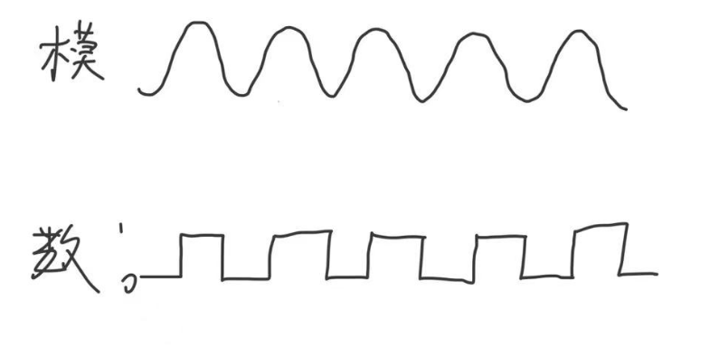

四层
-网络接口层(物理层+数据链路层)
-网际层(网络层)
-传输层
-应用层(会话层、表示层、应用层)
广域网(WAN)
城域网(MAN)
局域网(LAN)
个人区域网(PAN)
数据通信
资源共享(主要 )
分布式处理
提高可靠性
负载均衡
是一些互连的、自治的计算机系统的集合
APRANET
语法
语义
时序
1.物理层(最底层)
2.数据链路层
3.网络层
4.传输层
5.会话层
6.表示层
7.应用层(最高层)
1.机械特性：接口是怎么样的
2.电气特性：用多少伏的电
3.功能特性：线路上电平电压的特性
4.过程特性：实现不同功能所发射信号顺序
我是这样记忆的：机电功程
1.模拟信号：特定频段
2.数字信号：非0即1
调制：将数据转成模拟信号
编码：将数据转成数字信号
编码过程：1.采样 2.量化 3.编码
568B
橙白、橙、绿白、蓝、蓝白、绿、棕白、棕
568A
绿白、绿、橙白、蓝、蓝白、橙、棕白、棕
1.频分复用(FDM):利用频率
2.时分复用(TDM):利用时间段
3.波分复用(WDM):利用光波的波长
4.码分复用(CDM):同时同频利用数据码
5.统计时分(STDM)
我的记忆方法：频时波码统
1.归零编码
2.非归零编码
3.反向非归零编码
4.曼切斯特编码(以太网使用)
5.差分曼切斯特编码
6.4B/5B编码
以上内容记住就行，具体原理以后再说
解决使用何种信号来传输比特流